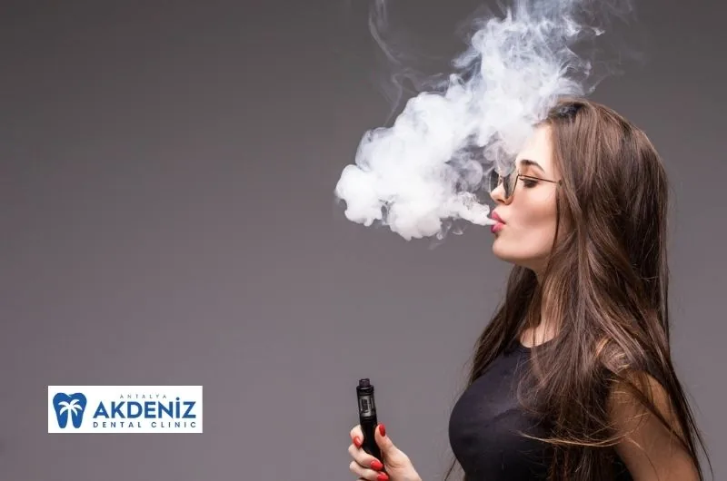

Vapatul pătează dinții?În ultimii ani, mulți oameni au trecut la țigara electronică pentru a renunța la țigările tradiționale sau pentru a găsi o alternativă „mai curată”. Deși majoritatea cred că vapatul nu lasă miros neplăcut pe haine și nu pătează dinții, cercetările științifice și observațiile clinice arată că lucrurile nu stau chiar așa. Așadar, vapatul pătează cu adevărat dinții?În ultimii ani, mulți oameni au apelat la dispozitivele de vapat pentru a renunța la țigările tradiționale sau pentru a găsi o alternativă „mai curată”. Deși cei mai mulți cred că vapatul nu lasă un miros neplăcut pe haine și nu pătează dinții, cercetările științifice și observațiile clinice arată că lucrurile nu stau chiar așa. Așadar, pătează vapatul cu adevărat dinții?
Ce este vapatul?
Vapatul (utilizarea țigărilor electronice) înseamnă inhalarea unui aerosol (numit de obicei vapori) produs prin încălzirea unui lichid (e-lichid) cu ajutorul unui dispozitiv.
Procesul de vapare și compoziția:
Mecanismul de funcționare: spre deosebire de țigările tradiționale, dispozitivele de vapat nu ard tutun, ceea ce înseamnă că nu are loc niciun proces de combustie. În schimb, un element de încălzire alimentat de o baterie încălzește o soluție numită e-lichid până când aceasta devine aerosol.
Compoziția e-lichidului: lichidul de vapat conține de regulă propilenglicol (PG), glicerină vegetală (VG), apă, arome și nicotină. Unii utilizatori pot folosi THC în loc de nicotină; în plus, deși unele produse pretind că nu conțin nicotină, acest lucru nu este întotdeauna corect.
Denumirile dispozitivelor: în literatura de specialitate, aceste sisteme sunt numite și sisteme electronice de livrare a nicotinei, țigări electronice sau vape pen-uri.
Scopul utilizării: mulți oameni folosesc vapatul ca mijloc de a renunța la fumat, considerându-l mai puțin dăunător decât produsele din tutun tradiționale, sau pentru a ocoli restricțiile din zonele pentru nefumători.
Riscurile implicate: aerosolul de vapat poate conține substanțe chimice precum formaldehida și diacetilul, asociat cu boli pulmonare, precum și metale grele precum nichelul, staniul și plumbul. În plus, nicotina, o substanță care creează o dependență puternică, poate afecta dezvoltarea creierului.
Efecte asupra sănătății orale: vapatul a fost asociat cu probleme grave de sănătate orală, precum uscăciunea gurii, retracția gingiilor, cariile și înmuierea smalțului dentar.
De ce și cum pătează vapatul dinții?
Dacă la țigările tradiționale gudronul este principalul vinovat pentru pete, în cazul țigărilor electronice situația este puțin mai complexă. Deși în dispozitivele de vapat nu există combustie, există câțiva factori-cheie care provoacă pete:
Aromele și coloranții:
Miile de arome diferite din e-lichide (în special aromele de mentol și de tutun) provoacă o decolorare mai mare a smalțului dentar decât aromele neutre.
Oxidarea nicotinei:
Deși inițial nicotina este incoloră, ea devine gălbuie atunci când intră în contact cu aerul (se oxidează) și poate provoca decolorări prin aderarea la suprafața dintelui.
Metalele grele și pigmenții:
În timpul încălzirii lichidului, ioni metalici precum nichelul, plumbul, staniul și cromul pot ajunge în aerosol din rezistențele din interiorul dispozitivului. Aceste metale și pigmenții din e-lichid se acumulează pe suprafața dinților, provocând pete.
Sunt obturațiile mai expuse decât dinții naturali?
Unul dintre cele mai izbitoare efecte ale vapatului este impactul asupra obturațiilor dentare (rășini compozite), mai mult decât asupra smalțului natural. Cercetările au demonstrat că obturațiile estetice sunt mult mai sensibile la vaporii de vapat decât dinții naturali:
- Schimbare vizibilă de culoare: unele studii au constatat că modificarea de culoare a obturațiilor compozite expuse la aerosolul țigării electronice este aproape la fel de mare ca cea provocată de fumul de țigară tradițională.
- Deteriorarea structurii suprafeței: componentele e-lichidului pot crește rugozitatea suprafeței obturației, facilitând aderarea petelor la aceasta.
- Efect rapid: la un pacient care nu avusese carii timp de 35 de ani s-au observat înmuierea și pătarea smalțului dentar la doar un an după ce a renunțat la fumat și a început să vapeze.
Provoacă vapatul uscăciunea gurii și slăbirea smalțului?
Vapatul nu lasă doar pete externe, ci favorizează pătarea și prin modificarea chimiei gurii:
- Scăderea durității smalțului: aromele din e-lichide pot reduce duritatea smalțului dentar cu 27%. Smalțul înmuiat reține mult mai repede pigmenții din alimente, băuturi și vapat.
- Magnet pentru bacterii: combinația dintre glicerina vegetală și arome crește de 4 ori aderarea bacteriilor la smalțul dentar și de 2 ori formarea biofilmului (placa bacteriană). Acest strat dens de placă absoarbe coloranții din surse externe.
- Propilenglicolul (PG) și uscăciunea: PG atrage apa din gură, uscând țesuturile (xerostomie). Saliva este cea mai importantă apărare, curățând natural dinții și neutralizând acizii; când saliva scade, dinții devin complet lipsiți de apărare în fața petelor și a cariilor.
Efectele vapatului asupra altor materiale de restaurare
Porțelanul și ceramica:
Dinții din porțelan sunt mai rezistenți la pete; totuși, vapatul poate provoca și la aceste materiale modificări de culoare observabile clinic (deși, în general, mai mici decât la obturațiile compozite).
Protezele dentare (acrilice):
Materialele acrilice folosite la protezele mobile se pot decolora și ele din cauza vapatului, dar acest efect este mai mic decât cel provocat de fumat.
Este vapatul mai rău decât fumatul?
- Intensitatea petelor: gudronul din țigări provoacă pe dinți pete mult mai rapide, mai închise la culoare și mai persistente. Din această perspectivă, vapatul are un potențial de pătare mai mic decât fumatul.
- Modelul petelor: petele de țigară apar în general pe suprafețele largi ale dinților, în timp ce petele de vapat tind să se concentreze de-a lungul liniei gingiei și la joncțiunile dintre dinți.
- Sănătatea orală în general: deși vapatul este considerat mai puțin dăunător pentru plămâni deoarece nu conține gudron, situația este diferită în ceea ce privește sănătatea orală. Uscăciunea gurii și eroziunea acidă provocată de zahăr pot crește riscul de boală gingivală și de carii. Acest lucru duce pe termen lung la slăbirea smalțului dentar, făcându-l mai vulnerabil la tot felul de pete.
Ce puteți face pentru a preveni petele de pe dinți cauzate de vapat?
Deși nu la fel de intens ca fumatul, vapatul vă poate păta cu siguranță dinții și mai ales obturațiile. Aceste produse, promovate cu promisiunea unor „dinți fără pete”, înmoaie de fapt smalțul dentar și provoacă uscăciunea gurii, făcându-vă dinții mai „vulnerabili” la pete. Cea mai eficientă metodă de a vă proteja zâmbetul este să evitați complet aceste produse.
Pentru a preveni petele de pe dinți cauzate de vapat și a vă proteja de ele, puteți urma acești pași:
- Beți multă apă: cea mai eficientă metodă de a preveni uscăciunea gurii este să beți multă apă după vapat. Astfel gura rămâne umedă și sunt îndepărtate și o parte din particulele care provoacă pete.
- Spălați-vă pe dinți regulat și corect: periați-vă dinții de cel puțin două ori pe zi cu o pastă cu fluor. Periajul după vapat este deosebit de benefic. Totuși, nu vă spălați pe dinți imediat. Mediul oral după vapat poate fi ușor acid; periajul imediat poate deteriora smalțul dentar. Ideal este să așteptați aproximativ o jumătate de oră înainte de periaj.
- Nu neglijați ața dentară: ața dentară este cea mai bună metodă de a curăța placa și resturile dintre dinți, greu accesibile.
- Folosiți apă de gură: o apă de gură fără alcool, potrivită pentru gura uscată, poate aduce beneficii suplimentare igienei orale.
- Mergeți regulat la medicul dentist: un control la fiecare șase luni vă permite să depistați din timp eventualele pete sau alte probleme. Medicul dentist poate îndepărta cu ușurință și petele de suprafață printr-o igienizare profesională.
- Fiți atenți la alegerea lichidului: dacă este posibil, alegeți lichide cu un conținut redus de nicotină și fără coloranți (transparente). Lichidele închise la culoare, cu arome puternice și dulci cresc riscul de pete.
Vapatul și petele de pe dinți: întrebări frecvente
Pătează dinții vapatul fără nicotină (lichid de 0 mg)?
Da, există în continuare posibilitatea apariției petelor. Chiar și fără nicotină, aromele (în special cele închise la culoare, precum vanilia și caramelul) și îndulcitorii din lichide pot păta smalțul dentar. De asemenea, provoacă uscăciunea gurii, ceea ce poate duce la apariția petelor.
Îndepărtează produsele de albire petele cauzate de vapat?
Pentru petele de suprafață, da. Benzile sau pastele de dinți pentru albire vândute în farmacii pot fi eficiente pe petele noi. Totuși, pentru petele vechi care au pătruns în smalțul dentar, cea mai eficientă soluție este o igienizare profesională sau un tratament de albire în cabinet, realizat de medicul dentist.
Îmi afectează vapatul gingiile?
Da, le poate afecta. Nicotina îngustează vasele de sânge din gingii, reducând fluxul sanguin. Ca urmare, gingiile nu sunt hrănite suficient, iar rezistența lor la infecții scade. Uscăciunea gurii favorizează și acumularea plăcii bacteriene, crescând riscul de inflamație a gingiilor (gingivită) și de boală parodontală (parodontită).
Provoacă vapatul carii?
Da. Există două motive principale: în primul rând, aromele din lichide sunt transformate în acid de bacteriile din gură, iar acesta erodează smalțul dentar. În al doilea rând, uscăciunea gurii provocată de vapat anulează efectul natural de protecție și curățare al salivei, accelerând formarea cariilor.
Ar trebui să mă spăl pe dinți imediat după vapat?
Nu, periajul imediat nu este o idee bună. Mediul oral poate fi temporar ușor acid după vapat. Periajul smalțului dentar într-un mediu acid poate provoca eroziunea acestuia. Se recomandă să așteptați cel puțin 30 de minute înainte de periaj. În acest timp, vă puteți clăti gura cu multă apă.
Influențează vapatul tartrul?
Deși nu provoacă direct tartru, are un efect indirect semnificativ. Vapatul accelerează formarea plăcii bacteriene, provocând uscăciunea gurii și perturbând echilibrul bacterian. Dacă această placă nu este curățată, se întărește în timp prin combinarea cu mineralele din salivă și se transformă în tartru.
Provoacă vapatul respirație urât mirositoare (halitoză)?
Da, are un efect semnificativ. Nicotina și amestecurile pe care le conține provoacă uscăciunea gurii. Gura uscată este un mediu ideal pentru înmulțirea bacteriilor care provoacă mirosul neplăcut. În plus, deși aromele folosite pot masca temporar mirosul, adevărata problemă este mirosul bacterian care se dezvoltă în timp.
Dacă renunț la vapat, vor dispărea petele de pe dinți?
Da, după ce renunțați nu se vor mai forma pete noi. Totuși, petele existente nu vor dispărea de la sine. Periajul regulat poate reduce în timp unele pete de suprafață, dar pentru petele încrustate este necesară o igienizare profesională (detartraj și periaj profesional) la medicul dentist.
Ce este mai rău pentru dinți: trabucurile, pipa sau vapatul?
În general, trabucurile și pipa, fiind produse din tutun care conțin gudron, au un potențial de pătare cel puțin la fel de mare ca țigările, iar în unele cazuri chiar mai mare. Vapatul provoacă în general mai puține pete în comparație cu aceste produse din tutun tradiționale. Totuși, niciunul dintre ele nu este „sigur”.